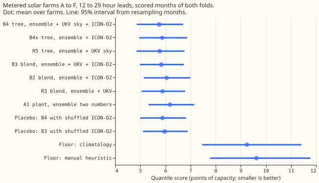
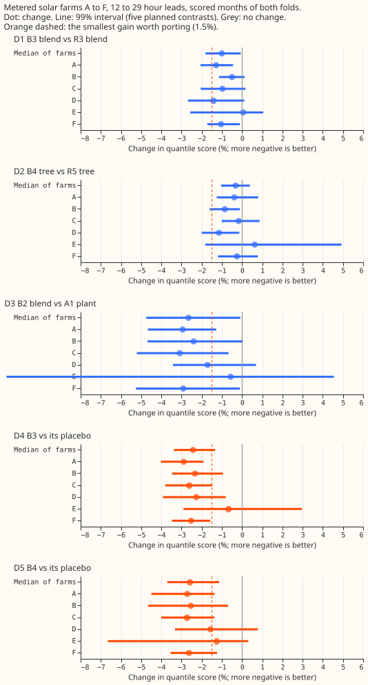
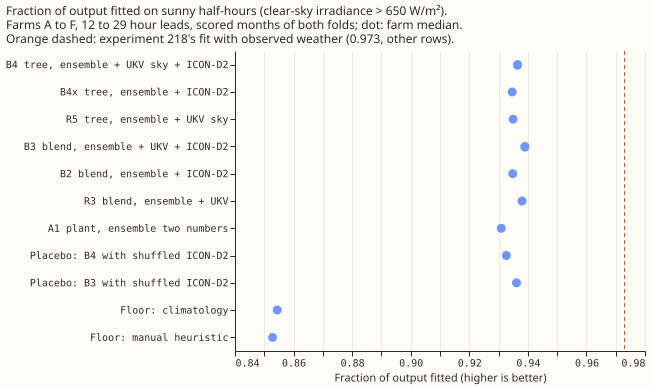

Does adding the DWD ICON-D2 weather forecast to the ensemble plus UKV lower a metered solar farm's day-ahead error?
Adding the German ICON-D2 weather forecast to the ECMWF ensemble and the Met Office UKV lowers the day-ahead error of a metered solar farm by 1.0%, which is under the 1.5% we set as worth a fourth weather source. ICON-D2 is the Deutscher Wetterdienst's regional weather model (2 km grid, run every 3 hours). The error is the quantile score: twice the mean pinball loss over 11 quantile levels, in points of capacity. The tree with ICON-D2 columns is 0.3% lower than the tree without them, with an interval that includes zero. The UKV used here is the research archive on the Centre for Environmental Data Analysis (CEDA), which differs statistically from the live UKV, so any gain is an upper limit for production.
We asked whether a metered solar farm's output is forecast better from ensemble, UKV, and ICON-D2 together than from ensemble and UKV. For each of six farms, A to F, we compared the plant model on a blend of the three products' irradiance (arm B3) with the blend of ensemble and UKV (arm R3), and a second-stage tree with ICON-D2 columns (B4) with the tree without them (R5). R3 and R5 are experiment 229's arms A3 and A5, re-run on these rows. The verdict is a small gain. The pre-registered prediction was a gain under 1.5% with an interval including zero; the B3 interval excludes zero by a small margin (-1.8% to -0.1%).



Results
- Arms. B2 is the plant model on a convex blend of the ensemble and ICON-D2 plant forecasts, with weights by UKV cloud band, so B2 also uses UKV's cloud forecast. B3 is the same on ensemble, UKV, and ICON-D2, with weights in steps of 0.1 by UKV cloud band, fitted on the other farms. B4 is the second-stage tree on ensemble columns, UKV shortwave, cloud, and plant-forecast columns, and six ICON-D2 columns (shortwave, direct radiation, air temperature, wind speed, the plant response to ICON-D2, and the plant forecast). B4x is the tree on ensemble and ICON-D2 columns only. The placebos are B3 and B4 with ICON-D2 taken from a random row of the same month, hour band, and cloud band.
- Rows. The rows are 19,225 daylight half-hours (sun more than 5 degrees above the horizon) of
six farms that have a complete UKV run and an ICON-D2 value, valid 12 to 29 hours after the
ensemble run's 00 UTC start. The folds, the tuning months, and the 10 scored months are those of
experiment 229. ICON-D2 enters through Open-Meteo's Previous Runs file (
previous_day1, the run Open-Meteo labels as made about 24 hours before), assumed published 3 hours after the run starts, so the latest valid time available at an 08 UTC forecast origin is 29 hours out. The ICON-D2 tables hold no usable rows before 2024-04, so each fold is tuned on the months from 2024-04 to just before it. - The quantile score at 12 to 29 hours (mean over farms, 95% interval) is 5.75 (4.86 to 6.71) points of capacity for B4, 5.77 (4.85 to 6.76) for R5, 5.84 (4.99 to 6.73) for B3, 5.87 (4.96 to 6.87) for B4x, 5.89 (5.05 to 6.79) for R3, 6.05 (5.14 to 7.00) for B2, and 6.19 (5.33 to 7.15) for the ensemble plant A1. The placebos score 5.88 (B4) and 5.97 (B3), climatology 9.25, and the manual heuristic 9.62.
- The planned contrasts are the median over six farms of the percentage change, with 99% intervals (the Bonferroni level for five contrasts). D1, B3 against R3, is -1.0% (-1.8 to -0.1). D2, B4 against R5, is -0.3% (-1.0 to +0.4). D3, B2 against A1, is -2.7% (-4.8 to -0.1). D4, B3 against its placebo, is -2.4% (-3.4 to -1.3), and D5, B4 against its placebo, is -2.6% (-3.7 to -1.1). The hypothesis needed D1 or D2 at least 1.5% lower, and neither is. D1's interval excludes zero at 2 of 6 farms (A and F), D2's at 2 (B and D).
- Shuffling ICON-D2 raises the error by more than adding ICON-D2 lowers it. D4 and D5 are larger than D1 and D2 because the blend weights and the tree are fitted on the real ICON-D2, so a shuffled column breaks the fit. The placebo contrasts show that ICON-D2 carries information about the day; D1 and D2 show how little it adds to the other two products.
- ICON-D2 is weaker than the ensemble and highly correlated with it. On sunny half-hours the correlation of plant-forecast errors is 0.76 between ICON-D2 and the ensemble, 0.60 between ICON-D2 and UKV, and 0.59 between UKV and the ensemble. B3's weights, averaged over the farms and both folds, are 0.44 ensemble, 0.36 UKV, and 0.20 ICON-D2 in the clearest cloud band (UKV cloud under 30%), 0.60, 0.22, and 0.18 in the middle band, and 0.70, 0.20, and 0.10 in the cloudiest. In B2 ICON-D2 receives 0.42, 0.27, and 0.20 in the same bands. Ensemble plus UKV (X1) is 5.0% better than the ensemble alone on these rows (-7.6 to -2.3), nearly twice B2's 2.7%. The shuffle placebo draws a random row of the same farm, month, hour band, and cloud band, which may be the row itself.
- On sunny half-hours the plant fit rises by 0.008. The fraction of output fitted (clear-sky irradiance above 650 W/m², median over farms) is 0.931 for A1, 0.935 for B2, 0.938 for R3, and 0.939 for B3. The gap to 0.973 (experiment 218's fit with observed weather, on other rows) is 0.042 for A1, and B3 closes 19% of that gap, compared with 17% for R3.
- The tails are not calibrated at the lowest levels for any arm, nor at q05 and q95 for the trees. Pooled over farms, the coverage at q01 is 0.041 for A1, 0.040 for R3, and 0.040 for B3, against 0.01 nominal. At q99 it is 0.993 for all three. The trees are worse at q05 (0.123 for B4 and 0.122 for R5 against 0.05) and at q95 (0.917 and 0.919 against 0.95). B3 beats the manual heuristic's quantile score by 41% (X3, -49.6 to -31.5). The curtailment value is not scored.
- The checks show no spread shifting the forecast. The mean forecast's absolute error points the same way as the quantile score (10.25 for B4, 10.31 for R5, 10.37 for B3, 10.46 for R3, and 11.13 for A1, in points of capacity). B3's gain over R3 is negative at 5 of 6 farms (not at E, +0.05%), and both folds agree: B3 scores 5.22 against R3's 5.26 on the scored fold, and 6.38 against 6.42 on the replicate.
- The data gate passed. ICON-D2 shortwave peaks in the same hour as the clear-sky curve at all six farms. The plant fed ICON-D2 shortwave has a held-out mean absolute error of 10.5 to 12.9 points of capacity, against 16.2 to 18.9 for the cloudless sky. Coverage is 99% to 100% of half-hours in every month from 2024-04, except 94% in 2026-04 and the partial 2026-09, and none before 2024-04. The stop rule's 18 months of overlap is met (2024-04 to 2026-08). The monthly ratio of ICON-D2 to clear-sky shortwave on sunny rows is 0.52 to 0.84. The ratio is defined only for April to September, the months with sunny half-hours.
- Audit triggers. The trigger for a nested arm beating the arm that contains it did not fire in the planned pairs, but B4x, without UKV, scores worse than R5 (X2, +1.4%, 0.06 to 3.6), as expected. The trigger for a result contradicting its prediction fires only for the interval of D1, which excludes zero by 0.07 percentage points. No audit was run, because the size of the contradiction (1.0% against a predicted under 1.5%) does not change the next step. The ICON-D2 ensemble arm was not run: D1 and D2 are below the 1.5% that the plan sets for a gain.
- The scope is narrow. The 12 to 29 hour band is the first 17 hours of the day-ahead forecast, and no row has a lead over 29 hours. The scored months are 10, of which 4 are autumn and winter, and the UKV era from 2026-02 is not scored. ICON-D2's publication delay of 3 hours is an assumption. The weather is read at each farm's nearest grid cell, and the schedule is one refit per fold, as in experiment 229.
- What to try next. A weather product of a different kind from a regional deterministic forecast, such as a satellite-derived cloud nowcast for the early hours of the day, and a small learned irradiance-response component fed by the three products.
Data-processing note
Experiment 268 found crossing quantiles in 26,344 of its 77,897 generator-forecast rows (34%), but all of them belong to three generators that are not solar farms, so none is on this page. Experiment 273 counted 0 crossing rows in every arm here, because the fit scripts sorted the 11 quantiles before writing them, so sorting does not change the scores on this page.